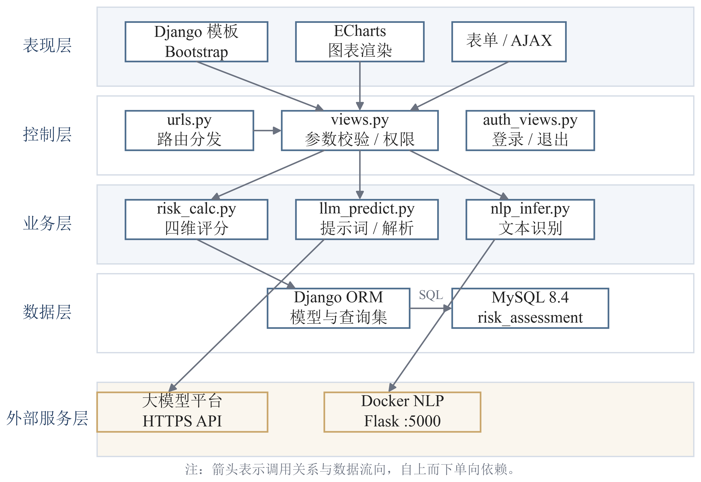
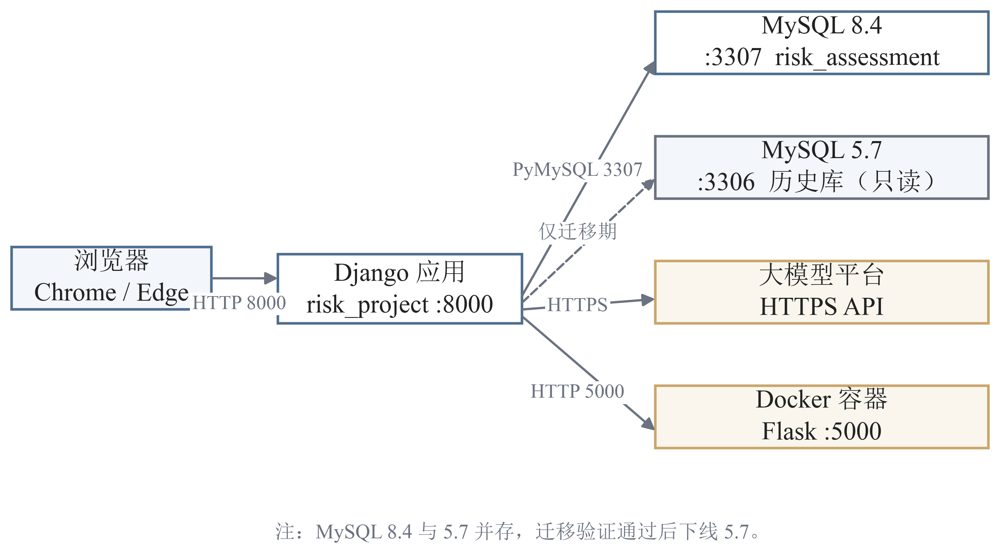
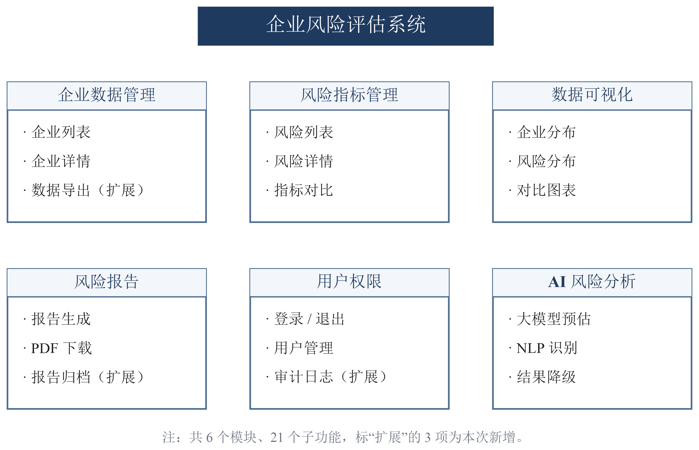
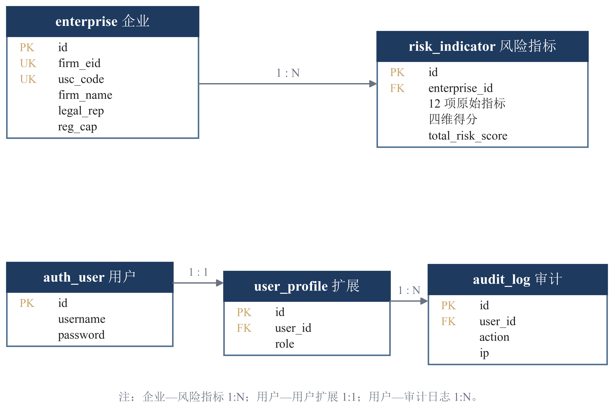
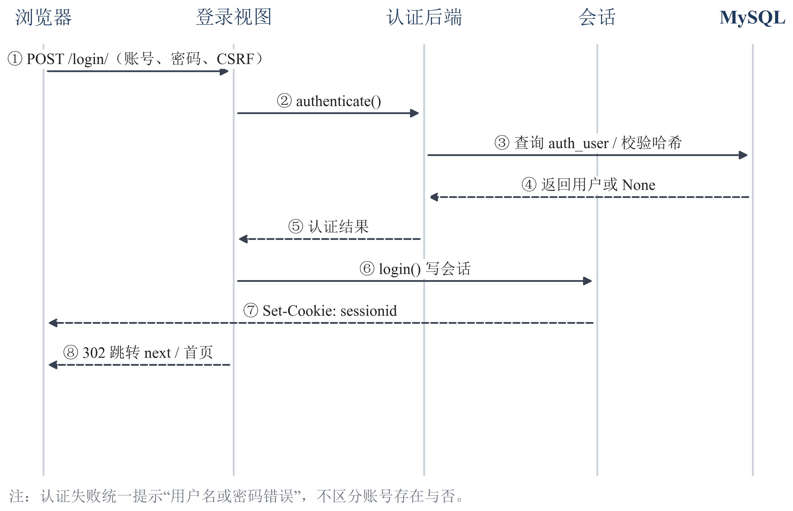
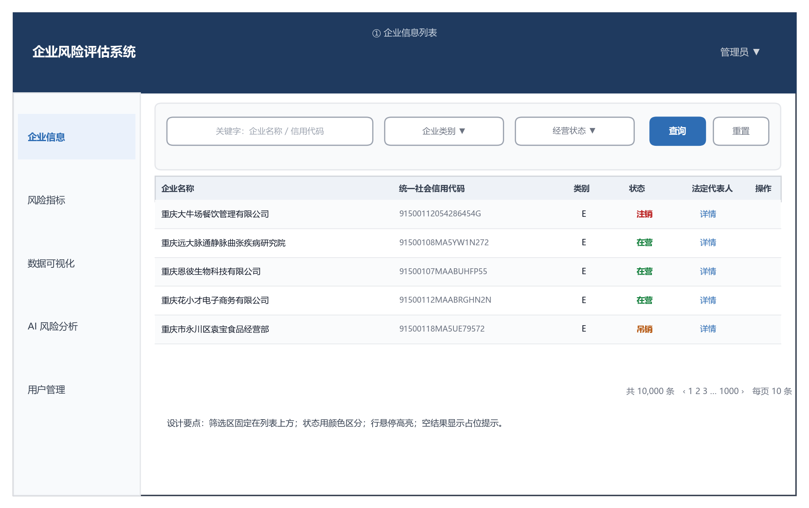
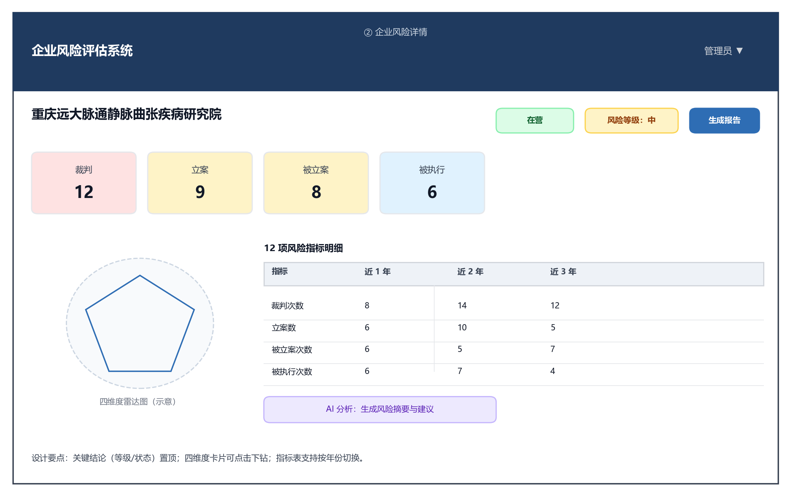
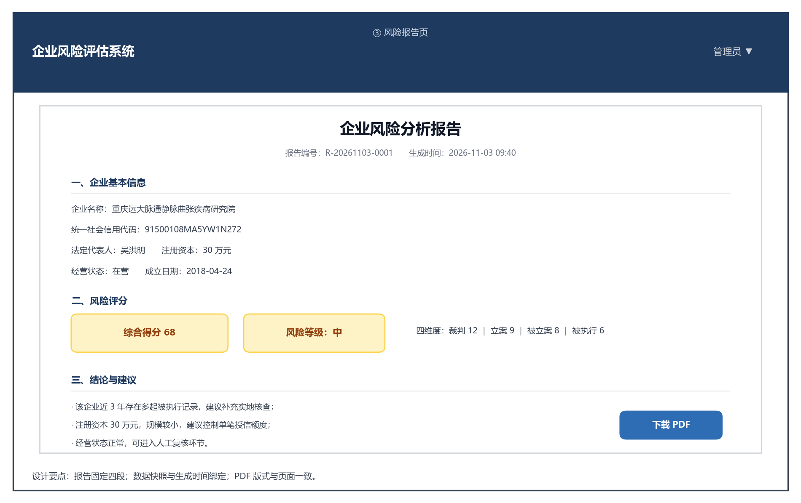

| URL | 视图 | 方法 |
|---|---|---|
| /enterprise/list/ | enterprise_list | GET |
| /risk/detail/<pk>/ | risk_detail | GET |
| /report/<pk>/pdf/ | report_pdf | GET |
| /predict/api/ | predict_api | POST |
| /admin/audit/ | admin_audit | GET |




| EXPLAIN 实测 | 结果 |
|---|---|
| usc_code 等值 | ref，rows=1 |
| ope_status 等值 | ref，rows=4639 |
| LIKE '重庆%' | ALL，rows=9279 |
| 设计内容 | 落地状态 | 证据 |
|---|---|---|
| 五层架构 / 目录 | 已建 risk_project + risk_app | manage.py check 0 issues |
| 四张表结构 | 已迁移建表，库内 14 张表 | 0001_initial.py，DESC enterprise |
| 数据导入 | 两张 CSV 各 10000 条，5.7 秒 | data_import.py 输出 |
| 后台与权限 | 4 个模型注册，搜索/筛选可用 | 后台列表截图 |
| 页面原型 | 3 张已出，其余 12 页有布局说明 | 图 3-2～3-4 |